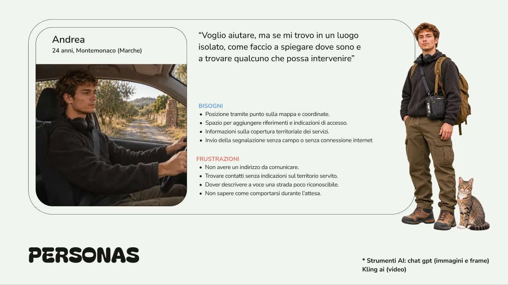
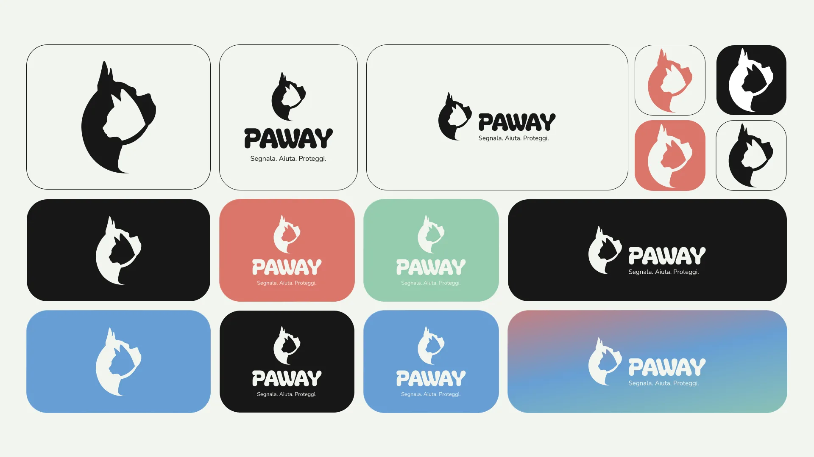
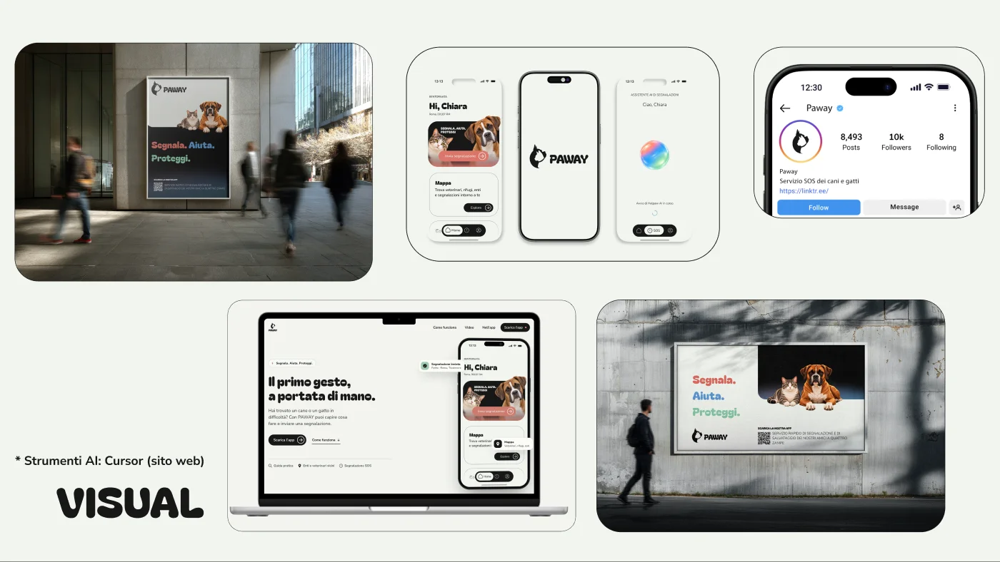

Logo animation
Onboarding
Flusso 1/2
Portfolio
Dal dubbio al primo gesto: ricerca, persone, marchio e i prototipi dell’app, in movimento.
Problema
I bisogni emersi dal questionario e dalle interviste sul campo.
38%
Non trova il referente o impiega oltre 10 minuti. Le interviste raccontano rimpalli e attese di 2–4 ore.
Dalle interviste «Quando richiami la Polizia Municipale ti dicono “non è di nostra competenza”…»
38%
Senza una guida si improvvisa: le manovre scorrette possono aggravare le lesioni dell’animale.
Dalle interviste «Mai sollevare un gatto o un cane ferito piegandolo […]»
28,5%
Dopo la segnalazione manca un riscontro. Le interviste evidenziano il bisogno di prove documentate.
Dalle interviste «Le segnalazioni anonime non portano a nulla.»
Analisi del problema
La sfida
Posizionamento qualitativo dal benchmark. PAWAY è l’obiettivo progettuale da validare: semplice e guidato.

Competitor

Personas
Le registrazioni dei flussi: logo e onboarding, home con mappa e guida, segnalazione e account.
Logo animation
Onboarding
Flusso 1/2
Homepage
Mappa
Contatti
Guida
Flusso 3
Segnalazioni
Account
Flusso 4/5

Aa
Il carattere dei titoli di capitolo.
Aa
Regular, medium, semibold, bold, extrabold, black, extralight, light e light italic. Tutto il resto dell’interfaccia.

Design system

Visual